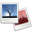
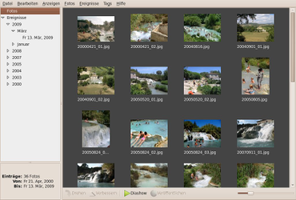
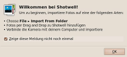
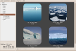
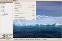

Shotwell
Dieser Artikel wurde für die folgenden Ubuntu-Versionen getestet:
Ubuntu 16.04 Xenial Xerus
Ubuntu 14.04 Trusty Tahr
Zum Verständnis dieses Artikels sind folgende Seiten hilfreich:

Shotwell  bezeichnet sich selbst als "Open Source Photo Manager für GNOME", ist also eine weitere Bildverwaltung neben Programmen wie digiKam oder F-Spot. Shotwell ist bei Ubuntu das Standardprogramm zur Bildverwaltung und ersetzt das früher präferierte F-Spot.
bezeichnet sich selbst als "Open Source Photo Manager für GNOME", ist also eine weitere Bildverwaltung neben Programmen wie digiKam oder F-Spot. Shotwell ist bei Ubuntu das Standardprogramm zur Bildverwaltung und ersetzt das früher präferierte F-Spot.
|  |
| Programmoberfläche |
Funktionen:
Import von weit über 1.000 Kameras via gPhoto
Unterstützte Bildformate: JPG, PNG, RAW
Verwaltung von Videos
Vollbild Diaschau
integrierte Bildbearbeitung für die häufigsten Änderungen
chronologische Ablage und Verschlagwortung (Tags)
Veröffentlichen von Online-Fotoalben
Kern des Programms ist eine interne SQLite-Datenbank, die alle Bilder und Bearbeitungsschritte enthält. So kann das Programm ein digitales Negativarchiv führen, ohne die Originale zu verändern. Auch die "Rückgängig"-Funktion basiert auf diesem Konzept. Erst die Exportfunktion schreibt bearbeitete Bilder auf die Festplatte. Das Programm ist in der Programmiersprache Vala geschrieben.
Installation¶
 Das Programm ist in den offiziellen Paketquellen enthalten. Falls nicht bereits vorinstalliert, kann folgendes Paket installiert werden [1]:
Das Programm ist in den offiziellen Paketquellen enthalten. Falls nicht bereits vorinstalliert, kann folgendes Paket installiert werden [1]:
shotwell
 mit apturl
mit apturl
Paketliste zum Kopieren:
sudo apt-get install shotwell
sudo aptitude install shotwell
Allerdings ist zu beachten, dass je nach Ubuntu-Version nur eine ältere Version von Shotwell zur Verfügung steht.
PPA¶
Für die aktuellste Version existiert ein inoffizielles "Personal Package Archiv" (PPA) [2].
Adresszeile zum Hinzufügen des PPAs:
ppa:yg-jensge/shotwell
Hinweis!
Zusätzliche Fremdquellen können das System gefährden.
Ein PPA unterstützt nicht zwangsläufig alle Ubuntu-Versionen. Weitere Informationen sind der  PPA-Beschreibung des Eigentümers/Teams yg-jensge zu entnehmen.
PPA-Beschreibung des Eigentümers/Teams yg-jensge zu entnehmen.
Damit Pakete aus dem PPA genutzt werden können, müssen die Paketquellen neu eingelesen werden.
Nach dem Aktualisieren der Paketquellen werden folgende Pakete installiert:
shotwell (ppa)
libdconf0
mit apturl
Paketliste zum Kopieren:
sudo apt-get install shotwell libdconf0
sudo aptitude install shotwell libdconf0
Bedienung¶
 Anschließend kann das Programm bei Ubuntu-Varianten mit einem Anwendungs-Menü über "Grafik -> Shotwell-Fotoverwaltung" gestartet [4] werden.
Bibliothek¶
Die Bibliothek ("Fotos") ist der Ordner, in den Bilder von einer Kamera importiert bzw. kopiert werden. Hierzu wird automatisch der Ordner ~/Bilder im Homeverzeichnis genutzt. Diese Bibliothek kann entweder nach Dateinamen oder nach Aufnahmezeit (chronologisch) auf- bzw. absteigend sortiert werden. Dazu dient der Menüpunkt "Anzeigen -> Fotos sortieren". Man kann auch einen anderen Ordner unter "Einstellungen -> Bibliothek" eintragen, z.B. ~/Bilder/Shotwell oder ~/Shotwell.
Neuere Versionen von Shotwell können den Bibliotheks-Ordner auch auf neue Dateien überwachen. Aktiviert wird die Funktion unter "Einstellungen -> Bibliothek" und dann die Option "Ordner der Shotwell-Bibiliothek auf neue Dateien überwachen" aktivieren.
Mit dem Befehl:
shotwell -d /Pfad/zur/Datenbank
kann man beim Programmstart gezielt auch unterschiedliche Datenbanken benutzen (max. eine pro Aufruf).
Shotwell verwendet die versteckten Ordner ~/.local/share/shotwell (oder ~/.shotwell für Hintergrundbild und Datenbank), ~/.cache/shotwell (Log und Vorschaubilder bzw. Thumbnails) sowie ~/.gconf/apps/shotwell (Programmeinstellungen).
Hinweis:
Der Speicherort der Shotwell-Datenbank lautet seit Version 0.13.x ~/.local/share/shotwell/data/photo.db
Import¶
Um möglichst viele Kameras zu unterstützen, greift das Programm auf gPhoto zurück. Zusätzlich besteht die Möglichkeit, bestehende Ordner mit Bildern zu importieren.
In der Voreinstellung werden importierte Bilder in den Ordner ~/Bilder kopiert. Dies kann zu Problemen führen, wenn man bereits vorhandene Ordner mit Bildern in die Bibliothek aufnehmen will. Daher enthält der Dialog "aus Ordner importieren" eine Auswahl, ob die Bilder beim Import in die Bibliothek kopiert werden sollen oder nicht.
Dies gilt auch für Fotos, die bereits im Ordner ~/Bilder enthalten sind. Auch diese müssen zuerst "importiert" werden, um in die zentrale Datenbank von Shotwell aufgenommen zu werden.

Verwaltung¶
Shotwell sortiert importierte Bilder automatisch nach dem (Exif-)Aufnahmedatum. So entstehen die "Ereignisse" nach dem Import automatisch. Darüber hinaus können Markierungen (Tags) verwendet werden, um Bilder zu gruppieren (frei wählbar, z.B. Familie, Urlaub, usw.). Ab Version 0.6 werden Bildtitel und Tags beim Import aus den IPTC- und XMP-Informationen automatisch erzeugt. Die Sortierung nach "Tags" findet sich in der linken Spalte unterhalb der "Ereignisse" wieder.
Die Tags (und andere Metadaten) können direkt in die Bilddateien geschrieben werden und stehen dann auch anderen Programmen zur Verfügung. Aktiviert wird die Funktion unter "Einstellungen -> Bibliothek" und dann die Option "Tags, Titel und andere Metadaten in die Fotodateien schreiben" aktivieren.
Darüber hinaus können Bilder mit einem gelben Sternchen (oder rotem Fähnchen) markiert werden. Mehr Möglichkeiten bietet die Bewertung bzw. Einteilung in fünf Stufen, die in Kombination mit "Anzeigen -> Fotos filtern" nur Bilder mit einer bestimmten Bewertung (oder besser) anzeigen kann.

Bildbearbeitung¶
Alle Änderungen sind – konzeptbedingt – innerhalb von Shotwell sofort sichtbar. Bearbeitete Bilder müssen aber erst exportiert werden, um die Änderungen auch anderen Programmen zugänglich zu machen.
Zu den enthaltenen Bildbearbeitungsfunktionen zählen:
Drehen
Zuschneiden
Rote Augen entfernen
Belichtung anpassen
(Farb-)Sättigung
Farbstich entfernen
Farb-Temperatur
Die jeweiligen Funktionen befinden sich im Menüpunkt "Foto" bzw. als Symbole unter dem Bild.
Export¶
Die Export-Funktion muss grundsätzlich verwendet werden, um Änderungen in Shotwell auf die eigentlichen Bilddateien anzuwenden. Auch um Bilder verkleinern zu können, müssen diese zuerst exportiert werden. Vor dem eigentlichen Export wird die gewünschte Auflösung abgefragt. Hier kann entweder die Auflösung in Pixeln (z.B. 800x600) oder eine Qualitätsstufe (z.B. niedrig = 50%) festgelegt werden.
Veröffentlichen¶
Mit "Veröffentlichen" ist das Erstellen eines Fotoalbums im Internet gemeint. Diese Funktion findet sich unter "Datei -> Publish...". Bisher werden folgende Online-Fotoalben unterstützt:
Hinweis:
Für die genannten Anbieter ist eine Registrierung erforderlich. Diese ist zuerst vorzunehmen, bevor dort Bilder mit Shotwell eingestellt werden können.
Neuere Version bieten auch die Möglichkeit, Bilder direkt in eine Piwigo-Galerie hochzuladen.
Problembehebung¶
Facebook¶
Möchte man das Programm mit Facebook nutzen, so entfernt man in den Einstellungen zur Privatsphäre (von Facebook) die Anwendung "Shotwell Connect" und startet Shotwell neu.
Links¶
FAQ
- häufige Fragen und Antworten
Bilder verwalten (Shotwell)
 - Video-Tutorial (Screencast) von Michael Kofler, Ubuntu 12.04
- Video-Tutorial (Screencast) von Michael Kofler, Ubuntu 12.04Gut geschossen - Shotwell ordnet digitale Fotos vollautomatisch
- EasyLinux 10/2010Bilder verwalten
 Übersichtsartikel
Übersichtsartikel
- Erstellt mit Inyoka
-
 2004 – 2017 ubuntuusers.de • Einige Rechte vorbehalten
2004 – 2017 ubuntuusers.de • Einige Rechte vorbehalten
Lizenz • Kontakt • Datenschutz • Impressum • Serverstatus -
Serverhousing gespendet von